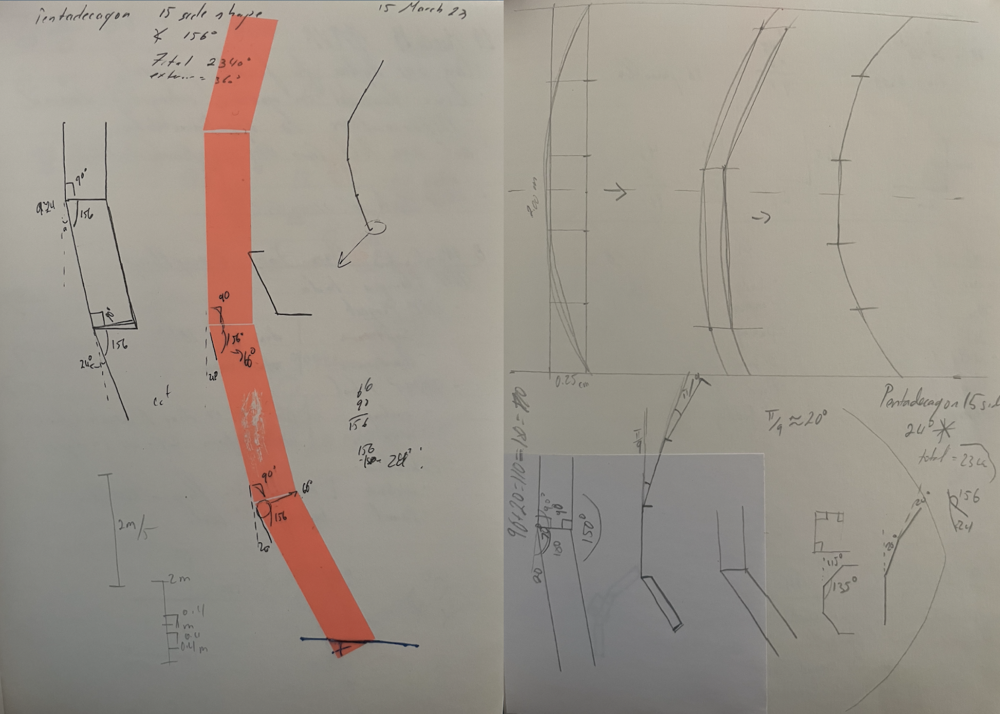

As someone who has experienced a difficult past, I turned to art initially as a means of therapy and self-expression. However, as I continue to grow and evolve, I question my motives and the role that creating art plays in my life. Is it merely a way to revisit and reconcile my past, or does it hold an alternative significance for my future? This piece is an exploration of that internal conflict.
Using Pure Data and two speakers accompanied by acoustic structures, I create an immersive sound experience that gives the illusion of echoing. In this piece, the echoes serve as a metaphor for my past and internal chaos. They continue to reverberate in the present, becoming increasingly distant as time passes. I question how this distance will shape and influence my future decisions.
The sound in this piece embodies a sense of ambiguity and uncertainty, much like my own personal journey. It also represents a willingness to embrace the unknown, the possibility of change, and forgiveness as I seek to transcend the limits of my personal experience.
Sketches & Models
Initially, the design of the structure was to be heavy and sturdy with enough strength to mount a speaker to the center. The plan was to use metal, but due to the expenses and feasibility, I decided it would be best to create it using a different material. This meant that I needed to create an illusion of echoing by using two speakers instead of one.
I played around with multiple ideas for the curvature of the structure, including taking inspiration from how a football was sewn together and how I could scale it up. However, I found it considerably more difficult to create a curve on both the x and y axis. Instead, I began thinking of the possibilities of curving the structure in a single axis.

Planning more ideas on how the structure could be built and also thinking about the scale. I began with the idea of creating a spine for the structure that would be made out of mdf.

Structure Assembling